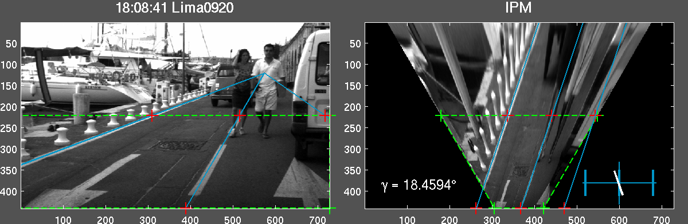
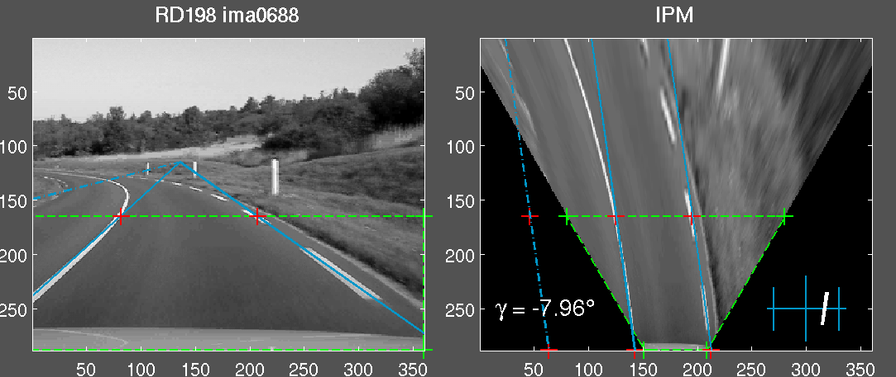
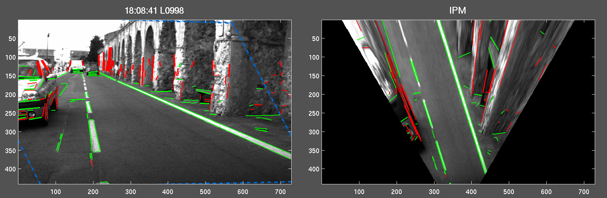
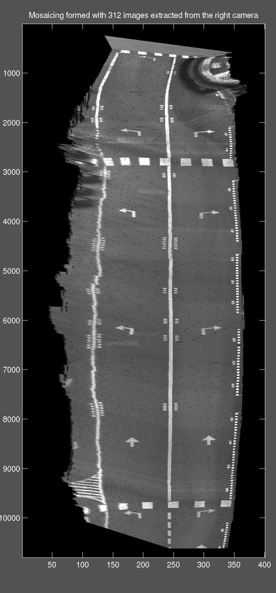

37 Mb 11 Mb |
The two first
animations present
the
tracking of the Dominant Vanishing
Point (DVP) in the specific context of urban scenes. I assume (like all
authors) that the urban scene contains sets of parallel lines oriented
along the three main directions. The algorithm focuses on the DVP which
is
the projection in the images of the intersection of 3D parallel lines
on
the plane at infinity. Among the subset of edge-lines converging to
the DVP, only those which are detected on the road verify the
homography induced by the road plane. Considering the global
assumptions, we can then segment the road area in the image in cyan with
the 2 extreme painted lanes which are focus with dark green.
At the bottom, you can see the timing diagram of the DVP coordinates in left red and right green images. Two Kalman filters are used to obtain a prediction of the location of the DVPs and the painted lanes and to smooth the variations of the estimations. |
14 Mb |
The third animation
shows the
same video-sequence with the matching of
coplanar feature points detected in the couple of stereo images. At the top, the feature points are discriminated with their contribution to the Super-Homography estimation :
On the right, a 2D trajectography of the left camera is computed, assuming the integration of the estimated motion between two consecutive views. |
13 Mb |
The methodology is
particularly weel-adapted to the typical configuration of urban
environments where the
localization with GPS is impossible due to the vertical planes which
limit the clear view of the horizon. The images are segmented in 3
parts : the road plane in cyan
and 2 others in light
yellow assumed as
vertical planes. A super-homography is computed on each region: the
regions in brown
represent
parts of the scene where the feature points
are not coplanar, they contain obstacles. I have now to merge the
estimations of the stereo-rig induced by each plane to improve the
robustness of the method and make easy the 2.5D reconstruction of the
environment. |
15.9 Mb 33.9 Mb |
The Inverse Perspective Mapping (IPM) transformation
can be
computed from two parallel lines which are lying on the same plane.
Thanks to the tracking of the DVP, computed with the cyan road
markers, the IPM transformation can be viewed as a homography,
where the four red
points,
which represent the green
foreground of the road plane, will form a
parallelogram in the bird-eye view. While the camera
calibration
is unknown, the warped image is dependant of two scale factors along
the u-axis and v-axis. In the animations, we suppose that the road has
a
constant width, the lateral position and the orientation of the camera
can also be estimated with a novel scale-factor uncertainty.   |
19 Mb
|
Thanks to the reliability and the precision of
the
homography computed with the Super-Homography, an obstacle detection
task can be processed. We also consider the homography between the left
and right image, induced by the road plane. Only the features which are
lying on the plane are correctly reprojected in the other image,
according to correlation and spatial criteria. We hence discriminate
the green
coplanar edges from the red other
which represent obstacles. On the right, the IPM view allows a polar
map of the free-space in front of the vehicle.  |
| One of the
application of the
localization of the vehicle with the purposed method is the
reconstruction of the road plane. The right image show a bird-eye view
of the road followed by the test-vehicle during a sequence recorded in
a sloppy street, near the Castel of Versailles. The compound image is
made of the superimposure of 312 images of the right camera, joint by
the estimated homography, induced by the road plane. |
|
|
 |
{kind=link}
{kind=link}
{kind=link}
{kind=link}
{kind=link}
{kind=link}
{kind=link}